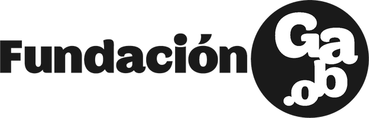
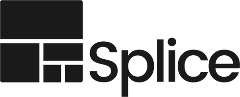

Da oltre dieci anni trasformo i dati in storie pubblicate in quattro continenti. Nei miei workshop insegno al tuo team a fare lo stesso — con le mappe, con l'IA e con i fondi per finanziare tutto.
Come scegliere la forma visiva giusta per i tuoi dati — e come riconoscere (ed evitare) i grafici e le mappe che mentono. Esempi reali di progetti premiati.
Geocoding, mappe coropletiche e mappe di punti. Prendiamo un dataset grezzo e lo trasformiamo in una mappa pronta per la pubblicazione durante la sessione.
Dove trovare i dati, come pulirli in fretta e quali domande farsi prima di visualizzare qualsiasi cosa. Ogni partecipante esce con un template riutilizzabile e un kit di strumenti per il proprio team.
Inizia l'inchiesta con l'IA: analizza documenti, archivi e dataset, riassumi rapporti e richieste di accesso agli atti, mappa fonti e piste — con ogni affermazione riconducibile alla sua origine.
Trasforma materiali disordinati in dati analizzabili: PDF scansionati, fogli di calcolo incoerenti e testi non strutturati diventano tabelle ordinate con gli LLM — in modo riproducibile, con ogni passaggio registrato e verificabile.
Dai dati puliti a grafici, mappe e interattivi con gli assistenti di programmazione basati sull'IA — lo stesso flusso di lavoro con cui ho ricostruito due progetti in giorni invece che in settimane, come ho raccontato al Reuters Institute di Oxford.
Dai forma al pezzo finale con l'IA come sparring partner per tagli, struttura e titoli — più le regole di verifica e la checklist etica che tengono le allucinazioni fuori dalla pagina.
Chi finanzia davvero il giornalismo — Pulitzer Center, European Journalism Centre, IJ4EU, fondazioni e fondi per l'innovazione — cosa cerca ciascuno e come abbinare la tua idea al bando giusto.
Impostazione, impatto, budget e tempistiche, analizzati riga per riga su candidature reali che hanno vinto — inclusi progetti finanziati dal Pulitzer Center e dalla Commissione Europea.
Durante la sessione scrivi il pitch di una pagina per la tua storia e ricevi feedback dal vivo, più una checklist per budget, partner e requisiti di rendicontazione.
Workshop e masterclass tenuti sul palco e in aula, dall'Europa all'America Latina fino al Sud-est asiatico.

Festival Gabo Bogotá · Colombia
Splice Media Chiang Mai · ThailandiaLezioni, seminari e corsi completi di data journalism, data visualisation e narrazione computazionale.
Tengo workshop e formazioni per aziende, ONG, festival e università — in italiano o in inglese, in presenza o da remoto. I tre moduli qui sopra sono pratici e affinati in oltre dieci anni di formazioni, fellowship e corsi universitari: scegline uno come masterclass di mezza giornata, oppure combinali in un bootcamp di più giorni. Formo anche singoli individui, non solo team.